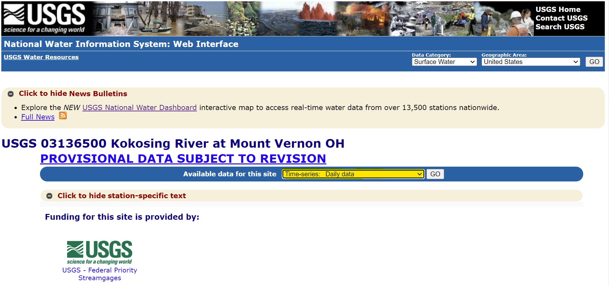
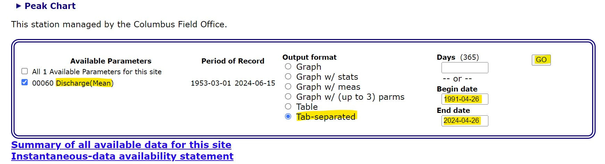
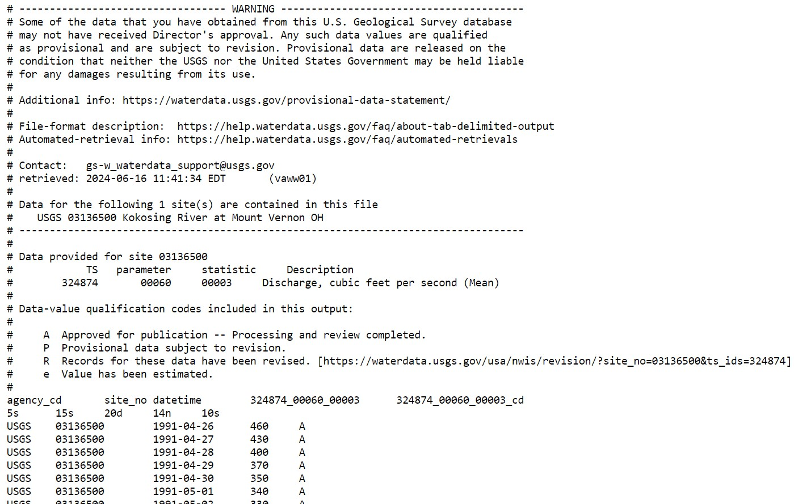
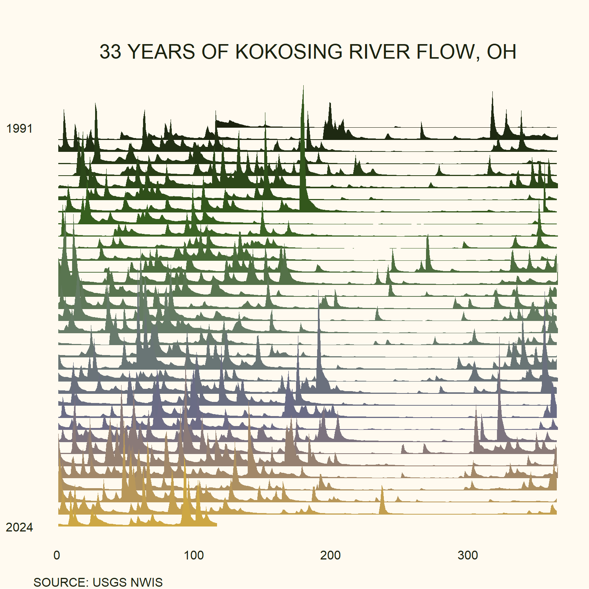

library(ggridges)
library(RColorBrewer)
library(ggplot2)
library(ggthemes)
library(lubridate)
library(tidyverse)
setwd("C:\\Users\\wadea\\Documents\\Maps")Discharge Joyplots
Discharge Data
To access daily discharge data, visit the National Water Information System (NWIS) Mapper and select your USGS gauge site https://maps.waterdata.usgs.gov/mapper/index.html.
Click the dropdown menu at the top in the blue bar that says “Available data for this site” and select “Time series: daily data.”

Scroll down to the box and make sure Discharge(mean) is selected. Under output format, click Tab-separated. Finally, select the time frame you wish to include in your plot. I like to gift my friends the daily discharge of their favorite rivers for their birthdays, so I select the date and year they were born and their most recent birthday.

Tip:
Some sites may not have discharge data over the entire time span you are interested in, so it’s a good idea to have some backup rivers in mind if you run into this.
Once you click “Go” a new tab will open up with your desired data.

Simply save as a .txt file and import into Excel, or copy and paste the data into Excel. Once in Excel, delete the metadata and unnecessary column headings such that you only have 3 columns: site_no, discharge, and datetime. Finally, save this as a .csv file in your working directory.
Data Formatting
After you download the data, you will need to reformat the date column into julian dates in order to plot the daily mean discharge across years.
First, load (or install) necessary packages and set your working directory:
Next, read in your downloaded data and reformat the dates:
#import data downloaded from NWIS
discharge <- read.csv("kokosing.csv", header = TRUE)
#create new date column
discharge$date <- as.Date(discharge$datetime, "%m/%d/%Y")
# create new date variables, incl. decimalized month
dailydischarge <- discharge %>%
mutate(year = year(date), julian = yday(date), month = julian/31+1)Plotting and Styling
Now we have mean daily discharge across julian dates. Time to plot! Here is an example of 33 years of Kokosing River Flow, Ohio for my friend’s 33rd birthday.
Tip:
I customized a color palette for this project by uploading a recent photo of my friend celebrating their birthday outside to the website https://coolors.co.
ggplot(dailydischarge, aes(julian, year, height = discharge, group = year, fill = year)) +
geom_ridgeline(scale = 0.0015, size=0.33, color = NA) + # adjust <scale> to change scaling and spacing of years
scale_fill_viridis_c(option = "D", begin = 0, end = 0.8) +
scale_fill_gradientn(colours = c("#1b220f", "#37611e", "#677d66", "#6a6a88","#cda744")) +
scale_y_reverse(breaks = seq(1991, 2024, by=33)) + # scale y axis
labs(title = "33 YEARS OF KOKOSING RIVER FLOW, OH",
caption = 'SOURCE: USGS NWIS',
x = '', y = '') +
theme_void() +
theme(text = element_text(family='sans', color = "#1b220f"),
plot.title = element_text(size= 20, hjust=0.5, vjust = 1, color = "#1b220f" ,margin = margin(t = 1.5, unit = "cm")),
plot.caption = element_text(size= 12, hjust=0.0, color = "#1b220f"),
axis.text=element_text(size=12, color = "#1b220f"),
axis.title=element_text(size=12, color = "#1b220f"),
legend.position = 'none',
plot.margin = margin(l=0.2, r=0.2, unit = "cm"),
plot.background = element_rect(fill = "floralwhite", color = NA),
panel.background = element_rect(fill = "floralwhite", color = NA),
legend.background = element_rect(fill = "floralwhite", color = NA))
#ggsave(filename = "kokosingflow.jpeg", height = 14, width = 11, units = "in", dpi = 900)